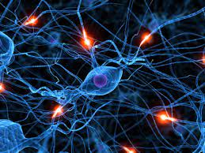
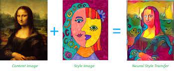

This project provides a demonstration of how to build an accurate face recognition system using the state-of-the-art FaceNet model. The system is deployed in Kivy and does the following:
- Face detection: detect and localize faces in the given image using MTCNN
- Face verification: a task that involves verifying the identity of a person with a given image. Is this the same person?
- Face recognition: a task that involves recognizing the identity of a person from a database of known faces. Who is this person?
- One-shot Learning: a machine learning approach where a model is trained to recognize or classify objects based on a single or very few examples per class

The model was trained with 3 classes (grizzly, black, teddy) of bear photos. Deployed as a demo for Gradio and HuggingFace

Build L-layered neural networks from scratch. Implemented Adam, RMSProp, Momentum optimization algorithms. Applied L2 regularization and dropout, He initialization techniques. Model supports mini-batch and was tested in MNIST handwritten digit dataset

This app is an implementation of a popular paper (Gatys et al., 2015) that demonstrates how to use neural networks to transfer artistic style from one image onto another. The application is deployed in Streamlit and does the following:
- Take 2 input images: content image and style image
- Combine two images to generate a novel artistic image

In this project, we implemented Body Pose Detection in Mediapipe and made byceps curl tracker. The idea was to calculate angle between shoulder, elbow and wrist joints